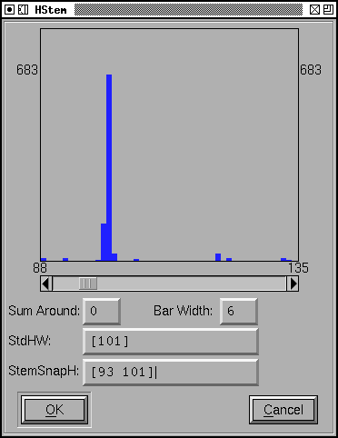

The histogram dialog¶
The histogram dialog is used to display three things which are useful for setting the some of the global hinting values that live in the PostScript Private dictionary. The dialog can display
the distribution of horizontal stem widths
which is helpful in setting [StdHW] and [StemSnapH]
the distribution of vertical stem widths
which is helpful in setting [StdVW] and [StemSnapV]
and the distribution of the minimal and maximal vertical positions of each glyph
which is helpful in setting [BlueValues] and [OtherBlues]
Moving the mouse around the histogram at the top of the dialog will cause little popups to appear showing how many stems there are with a given width, how that compares to the maximum count, and what glyphs have that width.
For both HStem and VStem, if you click on a histogram bar then that width will become the new value for Std[H/V]W, and will be the sole value for StemSnap[H/V]. Shift-clicking on a bar will add that width to StemSnap[H/V].
For BlueValues, entries must be made in pairs, and FontForge can’t tell until the second value is selected where the pair should be placed. So for BlueValues you must click on two histogram bars (click on the leftmost one first). Then if the second value is negative both will be added to OtherBlues, otherwise both will be added to BlueValues.
The BarWidth textfield allows you to change the width of the histogram bars. The default value is 6 pixels wide.
The SumAround textfield is an attempt to give you a feel for the distribution if it has been smeared out. If SumAround is 0 then the count displayed for a given width is the number of stems with that width, if SumAround is 1 the count also includes the number of stems that are one unit wider or less wide than the given value, and higher values of SumAround give wider smearing. Just because a given width is at a local maxima does not mean that it is the appropriate value to be entered in the StemSnap array, you may find that if you smear things out a bit that a near-by value would be a slightly better choice.
Pressing [OK] will set the indicated values in the font’s private dictionary.
When invoked from the font info dialog these dialogs will display information on all glyphs. When invoked from the menu of the font view then only information on selected glyphs will be shown (if no glyphs are selected, then again information will come from all glyphs). Characters containing references will not be counted.
FontForge can automatically generate these values for you (this dialog gives you the information you need to make your own choices which may be better than what FontForge will do on its own – it uses essentially these data itself). This will happen when you generate a postscript font and the font has no BlueValues or StemSnap information associated with it, or when you use the Element->Font Info->Private dialog.